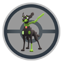

포켓몬 GO 지가르데 셀 루트 완료 리워드로 받는 법, 맵에서 안 모아도 되고 확률은 그대로
루트를 걷다가 맵 위에서 지가르데 셀을 직접 챙겨야 했던 분들, 이번 안내를 보고 한시름 놓으셨을 것 같아요. 10월 업데이트 안내에는 나침반 아이콘 통합이나 박사 전송 확인창 같은 변경도 같이 실렸는데요, 이 글에서는 그중 루트에서 만나는 지가르데 셀만 콕 집어서 풀어 볼게요~ 맵에서 셀이 보이면 눌러 줍던 분들은 동선이 낯설 수 있으니 어디가 바뀌었는지부터 짚어 볼게요. 결론부터 말하면 맵에서 줍는 일은 없어졌고, 할 일은 루트를 끝까지 걷는 거예요.
공식 안내 이미지(2023년 루트 소개 이벤트)예요. 이번 변경 화면은 아니고 루트 분위기만 담았어요
©Scopely Explore ©Pokémon/Nintendo/Creatures/GAME FREAK, 공식 뉴스 · pokemongo.com/ko/news/routes-new-feature-blaze-new-trails
지가르데 셀이 루트에서 어떻게 바뀌었나요
루트에서 만난 지가르데 셀은 이제 맵에서 안 주워도 되고, 루트를 끝까지 걸어 완료하면 리워드로 들어와요.
예전에는 루트 도중 맵에서 셀을 직접 수집해야 했는데, 이제는 걷기를 마친 뒤 리워드로 받는 쪽으로 옮겨 왔어요. 같은 대목에서 공식 안내는 발견 확률이 전과 같다는 점도 짚어 둡니다. 즉 받는 방식만 바뀐 거예요. 맵을 두리번거리며 셀을 찾아 챙길 필요가 없어졌으니 걷기에만 신경 쓰시면 돼요.
| 구분 | 변경 전 | 변경 후 |
|---|---|---|
| 셀 받는 곳 | 맵에서 직접 수집 | 루트 완료 리워드 |
| 내가 할 일 | 맵에서 셀 챙기기 | 루트를 끝까지 걷기 |
| 발견 확률 | 확정 발견 아님 | 전과 같음 |
그래서 지가르데 셀은 루트에서 어떻게 받나요
지가르데 셀을 받으려면 루트를 끝까지 걸어 완료하면 돼요. 순서는 이렇게 됩니다.
- 근처 메뉴에서 루트 탭 열기
- 주변 루트 중 하나를 골라 시작하기
- 시작부터 끝까지 걸어서 완료하기
- 완료 화면의 리워드 받기
근처 메뉴에는 지금 내 위치 주변의 루트가 올라오니, 어디서 걷느냐에 따라 고를 수 있는 루트도 달라져요. 셀은 완료 화면에서 받는 거라, 걷는 도중에 맵을 계속 들여다볼 일은 없어요.
루트는 근처 메뉴의 루트 탭에서 골라요
중간에 그만두면 어떻게 되는지는 아직 알려진 게 없어요. 셀을 노린다면 끝까지 걷는 쪽이 마음 편하죠. 루트를 끝까지 걸으면 셀 말고도 이런 보상이 같이 따라와요.
- 루트 배지: 루트를 처음부터 끝까지 걸으면 새로운 루트 배지를 받아요
- 하루 첫 완료 XP 보너스: 7일 연속으로 채우면 늘어나요
- 파트너 하트: 파트너와 함께 완료했을 때
- 루트를 걷는 동안 파트너 사탕을 얻는 속도가 빨라져요
- 처음 탐험하는 루트라면 향로에 포켓몬이 더 잘 이끌려요
셀을 노리는 김에 하루에 한 번은 루트를 끝까지 걸어 두면 보너스도 같이 챙길 수 있어요.
완료하면 리워드 목록이 이렇게 떠요
루트를 걸으면 지가르데 셀이 확정으로 나오나요
아니요, 루트를 따라 걷는다고 지가르데 셀을 확정으로 발견하는 건 아니고, 발견 확률은 전과 같아요. 받는 자리가 맵에서 완료 리워드로 옮겨 왔을 뿐, 걸으면 더 잘 나온다는 뜻은 아니거든요. 확률 수치는 공개돼 있지 않아요. 끝까지 걸었는데 리워드에 셀이 없었다면 확률 때문일 수도 있고, 아래 하루 한도나 큐브 조건 같은 이유일 수도 있어서 어느 쪽인지 딱 잘라 말하긴 어려워요.
아래 목록과 자주 묻는 질문의 수치는 공식 페이지에서 확인되지 않은 알려진 수치예요. 변경 전 기준이라 지금도 같은지는 알 수 없습니다.
- 하루에 받을 수 있는 셀은 최대 3개
- 그날 아직 진행하지 않은 루트에서만 셀이 나올 수 있어요
- 셀 보유 상한은 300개
이 규칙이 그대로라면 오늘 이미 돈 루트를 또 걷기보다 아직 안 돈 루트를 고르는 쪽이 셀을 만날 기회가 있는 길이에요. 하루 한도가 달라졌다는 얘기가 나오면 그때 맞춰 바꾸면 돼요.
확인 위치: 인게임 루트 완료 화면 · 확인되면 위 목록 아래에 한 줄로 채워주세요.
지가르데 셀은 어디에 쓰는 건가요
지가르데 셀은 모아서 지가르데의 폼을 바꾸는 데 쓰는 재료예요. 공식 루트 안내에서는 질서포켓몬 지가르데를 이루는 세포 같은 존재라고 소개하고, 루트를 탐험하다 발견할 수도 있다고 해요. 지가르데큐브는 이 셀을 모으기 위한 도구라고 소개돼 있고, 모은 셀은 큐브에 쌓이는 걸로 알려져 있어요.

지가르데 10% 폼 아이콘이에요
©Scopely Explore ©Pokémon/Nintendo/Creatures/GAME FREAK, 공식 뉴스 · pokemongo.com/ko/news/routes-new-feature-blaze-new-trails
보유한 셀은 여기서 볼 수 있어요
같은 안내의 나침반 아이콘과 박사 전송 확인창은 뭐가 달라졌나요
맵의 나침반과 날씨 아이콘은 하나로 합쳐졌고, 100% 포켓몬을 박사에게 보낼 때는 확인창이 뜨게 됐어요. 같은 안내에 실린 나머지도 한눈에 보면 이래요.
- 나침반·날씨 아이콘: 플레이어 활동에 따라 바뀌는 아이콘 1개. 회전하거나 확대할 때는 나침반, 그 외에는 날씨 아이콘으로 보여요
- 날씨 아이콘을 누르면 지금 활성된 날씨 조건과 부스트가 보이고, 나침반을 누르면 맵 시야 방향이 전환돼요
- 포켓몬 박사에게 보내기: 100% 포켓몬이 들어 있으면 확인창이 뜨고, 대량 전송이면 100% 포켓몬 개수도 같이 표시돼요
- 맵 화면에서 요소들이 겹쳐 보이던 부분은 겹침이 완화됐어요
- 커뮤니티 앰버서더 미트업 체크인은 게임 내 맵과 웹에서 할 수 있고, 시작 15분 전부터 열려요
회전하거나 확대할 때는 나침반, 그 외엔 날씨예요
자주 묻는 질문
Q. 지가르데큐브가 없어도 루트에서 셀이 나오나요?
알려진 바로는 지가르데큐브가 있어야 루트에서 셀이 나오고, 큐브는 스페셜 리서치 «새로운 길의 탐색»을 진행하면 받을 수 있어요. 그래서 셀을 노린다면 큐브부터 갖춰 두는 게 순서예요. 이미 갖고 계시다면 그대로 걸으시면 돼요.
Q. 지가르데 폼은 셀이 몇 개 있어야 바뀌나요?
10% 폼에서 50% 폼으로 가는 데 50개, 50% 폼에서 지가르데(퍼펙트폼)로 가는 데 200개가 든다고 해요. 합치면 250개예요. 하루 3개 한도가 그대로라고 가정하면 50개까지 최소 17일, 250개까지는 84일쯤 걸리는 계산이라 폼 변경은 느긋하게 가는 편이 좋아요.
Q. 지가르데 셀은 다른 사람과 교환할 수 있나요?
알려진 규칙으로는 셀은 교환이 안 돼요.
포켓몬 GO 지가르데 셀 루트 한 줄 정리
확률은 그대로라서 저라면 평소 걷던 루트에 겸사겸사 얹어서 가볍게 가져갈 것 같아요ㅎㅎ 다들 즐겜하세요!
참고한 곳
· 포켓몬 GO 공식 뉴스 — 10월 게임플레이 업데이트 안내
· 포켓몬 GO 공식 — 루트 안내
✔ 포켓몬 GO 같이 보기 좋은 내용
· 포켓몬 GO 깜눈크 부화데이 10월 17일 11시부터 17시, 알 부화 거리 절반 보너스 챙기는 법
· 포켓몬고 그푸리 처음 만나는 법, 가을 소풍 GO패스 패스 태스크와 향로 출현 기간 10월 13일부터
· 포켓몬고 주황색 한복 피카츄 만나는 법, 별1 레이드와 가을 소풍 리서치 10월 11일 종료 전에 챙기기